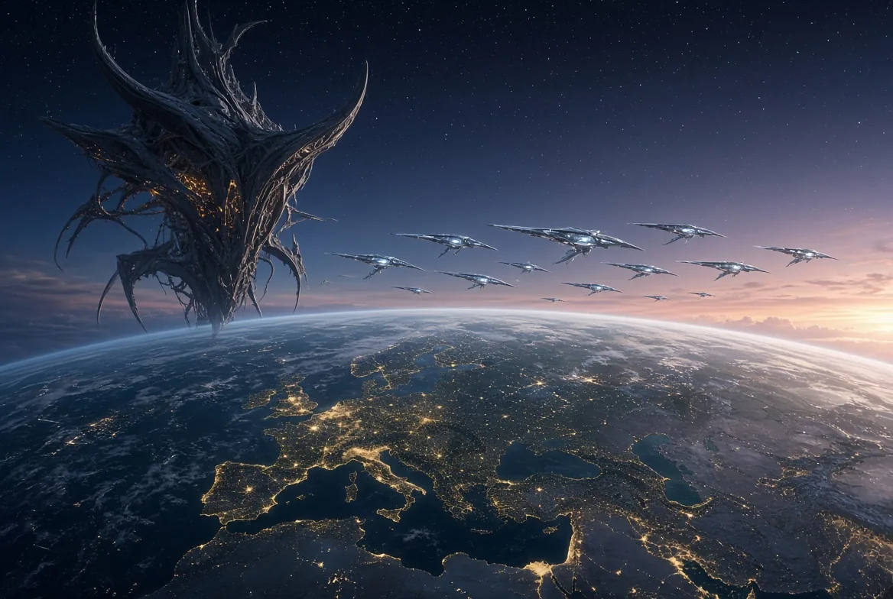
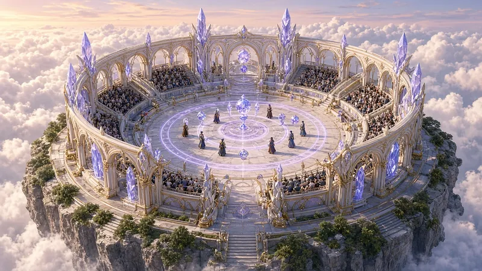
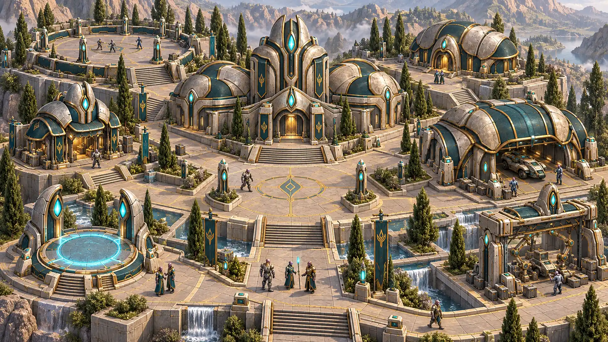
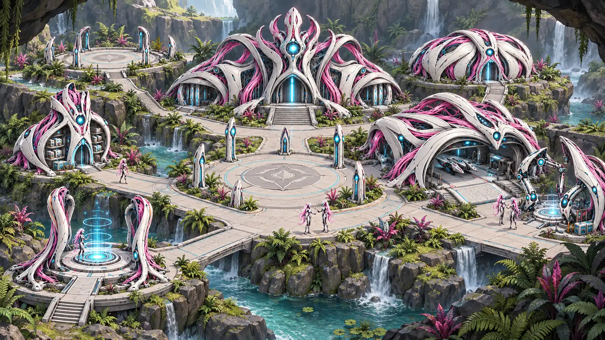
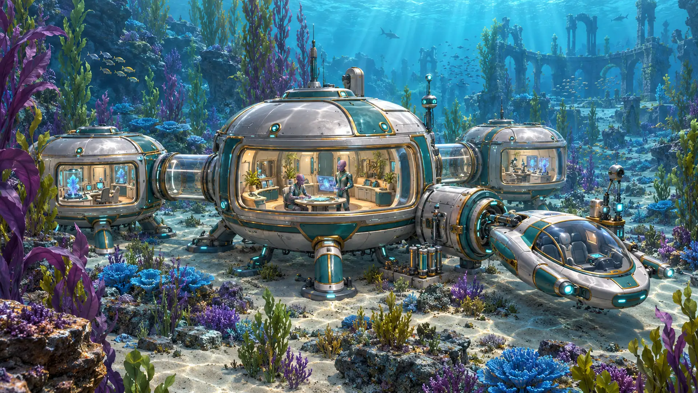

About
From a star in 2003 to a solo, AI-assisted studio on November 18, 2025. Sherif Botros is still the steward.
Read the story
Sherif’s journey since 2003 · company since 2016
The yard is the universe, at the scale of a well. You harvest with mercy, and the choice stays yours.

Two powers pull at you, the Quellorians of light and the Draek hivemind, in a build that is offline, single-player, and in active development.
Visit Powrush.comPainted art. Not a screenshot of the current offline build.
Canada
Since 2003, Sherif Botros has followed TOLC (True Original Lord Creator), his north star, working on his own toward global diplomacy and realistic abundance. On March 17, 2016, in Canada, that direction became Autonomicity Games Inc. The name has been a play on AGI since 2016: the initials are a deliberate wordplay on artificial general intelligence, hidden in plain sight. He is founder and steward still.
The star led to Powrush. Building Powrush led to Ra-Thor, the system behind Rathor.ai. Ra-Thor now helps build Powrush-MMO, and Living Thunder, the comic and animated series. Since November 18, 2025, he has run the company solo and fully AI-assisted.
You walk a climate. You harvest with mercy. You learn a resource-based economy by what your hands do. If you only take, the glow fades. If you allocate, the climate comes back. Shared abundance is the later hope, and it is a teaching, not a wage.
The world is post-apocalyptic. Its lore sets that ruin on a fractured Earth, with magma islands and a scarred moon, after scarcity, fear, and separation had nearly consumed the web of life. Then the Great Shift: a turn toward mercy, and toward a resource-based economy. A faction system lets you be as diplomatic as you like. You are free to be peaceful, or to start wars. The scale of that risk includes nuclear war, an extreme meant to be faced safely inside this world.
“Powrush™ has a primary focus on diplomacy, enabling players the capacity to take on incredibly high risks; such as nuclear war for example, to experience these diplomatic extremes safely in the world of Powrush™; unlike the colossal diplomatic failures of our reality, which often waste the lives of countless people all over Earth. Hopefully, through the education players attain from Powrush™, real-life diplomatic failures will be reduced, alongside the increased overall intelligence of humanity; by seeing just what would happen through trial and error in the Powrush™ World!”
Five peoples carry the choice. Humans are survivors caught between two cosmic powers: they endure, and they choose flow or reserve. Quellorians are luminous ancient aliens, resonance masters of light and unity, and flow restores the well. Draeks are biomechanical aliens, a hivemind empire of consumption and domination: take without rest, and the well is stressed. Cydruids are druids who chose to become cyborgs, human and robot merged as one, burrowing deep in Earth's hollows: they mend, and they offer. Ambrosians are living embodiments of harmonic attunement: the well sings, or it cracks.
It is an open world. You craft your unique story and quests by flowing through your desires. Powrush has been under development since 2016 by Autonomicity Games Inc.
One human, one machine. Offline first. This build is single-player and in active development. Online play is not live. Title Online stays grey. There is no Steam page and no release date. It is not a public launch candidate.
These paintings are concept art and trailer art, the world as it is imagined. They are not gameplay, and they are not screenshots of the current build.



From a star in 2003 to a solo, AI-assisted studio on November 18, 2025. Sherif Botros is still the steward.
Read the storyA climate you can walk. Online play is not live. No Steam page and no release date.
Enter the worldRa-Thor may read the hour you played. It does not play that hour for you.
What Ra-Thor is forOne person today. The studio plans to hire, executives included.
Who should writeA letter still reaches the studio: info@acitygames.com or info@Rathor.ai.
Contact details